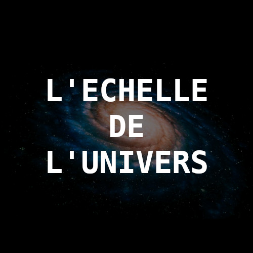
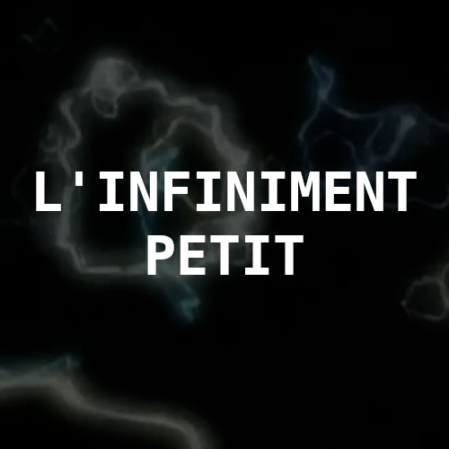
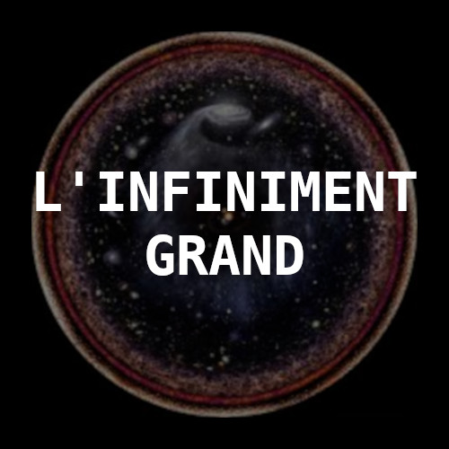
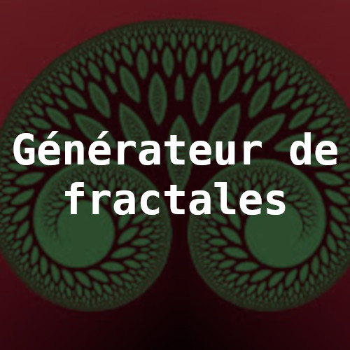
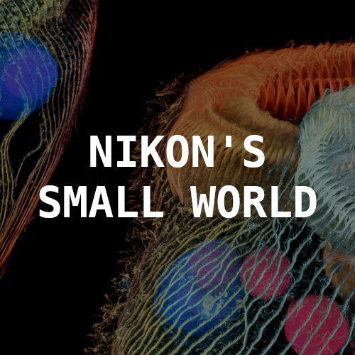
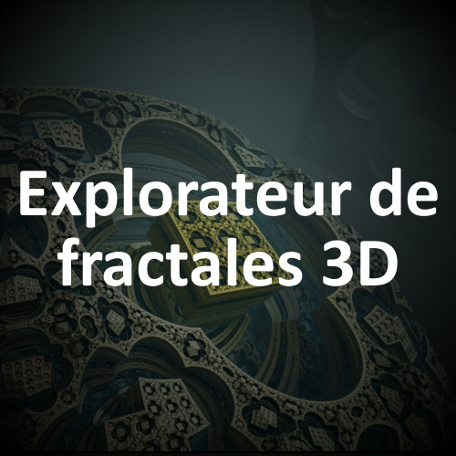

Your browser does not support HTML5 video.
Infiniment Petit & Infiniment Grand






L'échelle de l'Univers
Zoomez du bord de l'univers à la limite quantique de l'espace-temps
et apprenez l'échelle des choses en cours de route.
×
Si en levant les yeux au ciel il vous arrive de vous sentir petit, écrasé par le poids de l'immensité
alors dites vous qu'il existe là à proximité, un monde qui fait de vous de véritables géants ...
×
Ouvrez grands les yeux aujourd'hui, nous allons entreprendre un voyage aux confins de l'univers connu
et aussi loin qu'il est possible d'aller ...
×